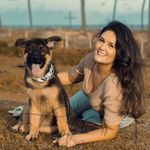
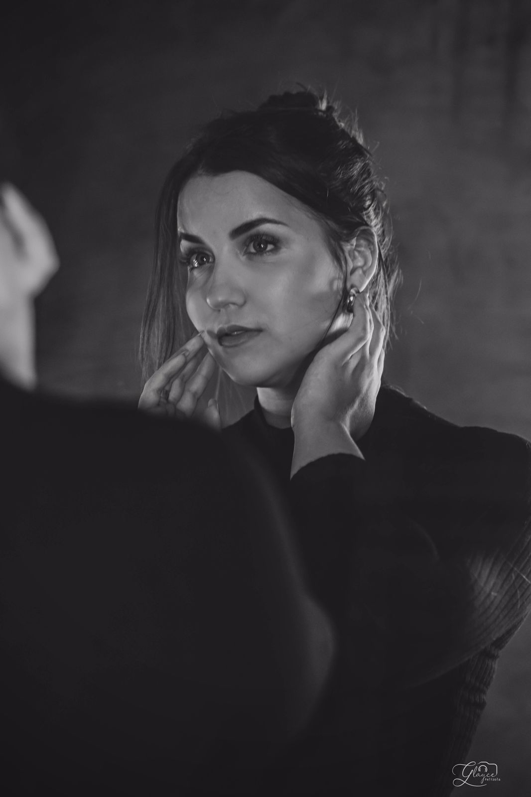
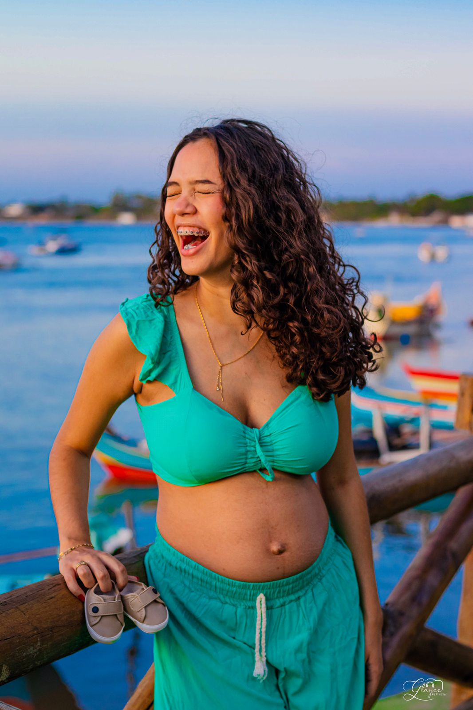

Overview
Purpose
Provide information and details about the work of Glayce Kelly, Professional Photographer. Provide Images of Photo shoots, comments of clients, and contact information.
Audience
It's for members of the public who wish to hire Photography services or just admire and support this beautiful work. P
Branding
Website Logo
Style Guide
Color Palette
Palette URL:
https://coolors.co/c38370-a45c40-e4b7a0-f6eeed| Primary | Secondary | Accent 1 | Accent 2 |
|---|---|---|---|
| #C38370 | #A45C40 | #E4B7A0 | #F6EEED |
Typography
Heading Font: Carlito
Paragraph Font: Carlito
Normal paragraph example
My name is Glayce Felizola, I'm 26 years old and I was born and raised in Arapiraca, Alagoas. I am married to Luã Felizola. I've always had a lot of love for photography because it's always been present in my life, I've always liked to photograph my friends and bring out the beauty they had and that they often didn't realize. I love the way people feel after contemplating my look, I am passionate about affective photography because it portrays special moments in people's lives and makes these moments be recorded forever. My work goes far beyond a simple photo, it's being able to freeze the real love of each moment.
Colored paragraph example
My name is Glayce Felizola, I'm 26 years old and I was born and raised in Arapiraca, Alagoas. I am married to Luã Felizola. I've always had a lot of love for photography because it's always been present in my life, I've always liked to photograph my friends and bring out the beauty they had and that they often didn't realize. I love the way people feel after contemplating my look, I am passionate about affective photography because it portrays special moments in people's lives and makes these moments be recorded forever. My work goes far beyond a simple photo, it's being able to freeze the real love of each moment.
Navigation
Site Map
Content
Home page

- Glayce Photos
- Follow

- My name is Glayce Felizola, I'm 26 years old and I was born and raised in Arapiraca, Alagoas. I am married to Luã Felizola. I've always had a lot of love for photography because it's always been present in my life, I've always liked to photograph my friends and bring out the beauty they had and that they often didn't realize. I love the way people feel after contemplating my look, I am passionate about affective photography because it portrays special moments in people's lives and makes these moments be recorded forever. My work goes far beyond a simple photo, it's being able to freeze the real love of each moment. I hope that this love and this gift can connect me to many other people and leave a taste of my perspective on their lives.
- 
Viviane
- I felt amazing, it translated everything I am, how I see myself and how I want to be seen! You are simply amazing! For all the care, perception and intentionality in everything!

Hellen
- I felt amazing, it translated everything I am, how I see myself and how I want to be seen! You are simply amazing! For all the care, perception and intentionality in everything!

Priscila
- I felt amazing, it translated everything I am, how I see myself and how I want to be seen! You are simply amazing! For all the care, perception and intentionality in everything!
Portfolio

- 
- 
Contact us
Images for the Page Contact US